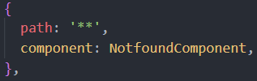
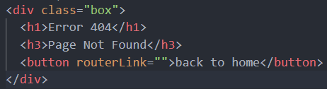

Error 404
Page Not Found
Go ahead, type any unknown
route in the search bar and
you'll come right back here
Go ahead, type any unknown
route in the search bar and
you'll come right back here
app-routing.module.ts
(ensure this is at the BOTTOM/END of routes array)
 notfound.component.html 